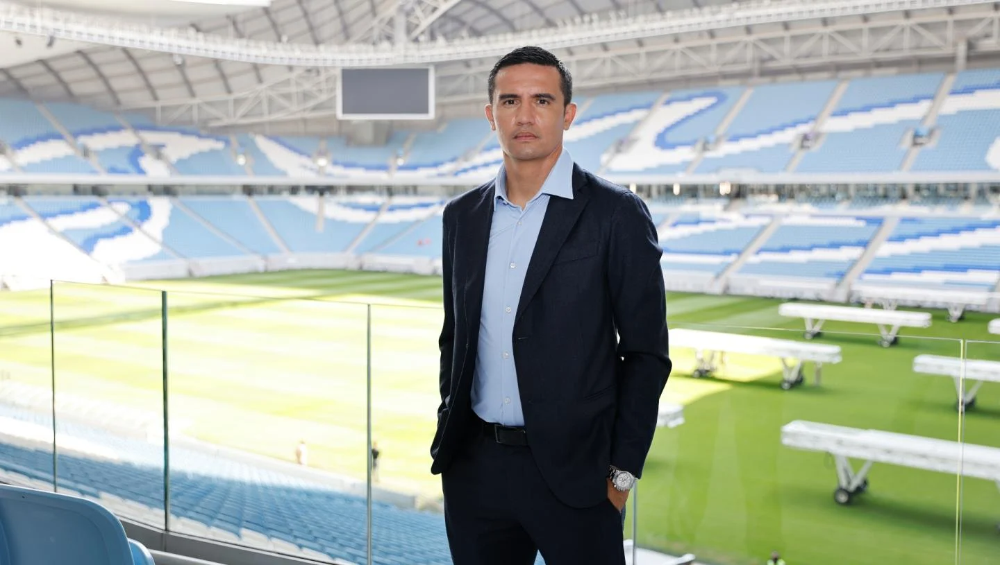
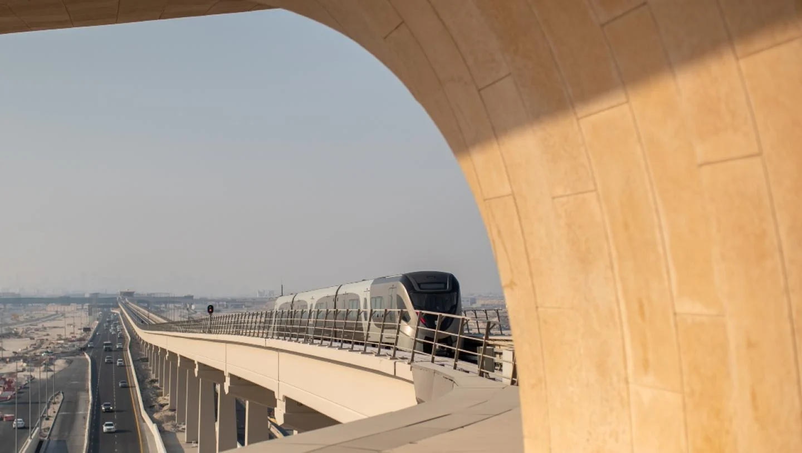
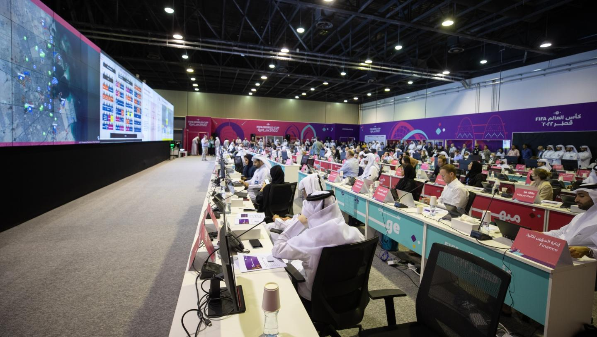

17/10/2022
Los organizadores de Catar 2022 anuncian 30.000 habitaciones adicionales
El pais se convierte en un destino inigualable durante el torneo

15/10/2022
Tim Cahill: Jugar todos nuetros partidos en Al Janoub favorece a Australia
El ex-delantero australiano visita la sede Catar 2022 donde Australia jugara sus tres partidos

12/10/2022
Informacion esencial de transporte para visitantes durante la copa mundial de la FIFA 2022
Los fanaticos cuantan con varias opciones para garantizar una gran experiencia durante el torneo

11/10/2022
El 30 de octubre es la fecha limite para las acreditaciones de prensa
Los periodistas deberan registrarse en el portal de medios de Catar (PMC) antes del 30 de octubre